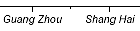
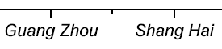

FAQ-804 Wie behebe ich Probleme beim Exportieren von EPS/PDF-Dateien?
export-pdf-prob
Letztes Update: 31.01.2023
Die meisten Diagramme können problemlos in PDF und EPS exportiert werden. Bei bestimmten Merkmale in den Diagrammen oder spezifische Eigenarten funktioniert der Export möglicherweise nicht. Hier sind einige Beispiele:
-
Transparenz: Der PDF-/EPS-Export kann Probleme mit Transparenz haben, wenn das Diagramm von einem anderen Grafikeditor wie Photoshop, llustrator und CorelDraw geöffnet wird.
Lösung:
- Schalten Sie die Transparenzeinstellungen im Diagramm aus ODER
- exportieren Sie das Diagramm als PDF und öffnen Sie es in Photoshop oder exportieren Sie es als EMF und bearbeiten Sie es dann in PPT.
-
Probleme mit der Schrift:
- Der Text kann im PDF-/EPS-Export verzerrt oder gequetscht erscheinen.
Lösung:
- Setzen Variable @TO = 2 durch Eingabe von
@TO = 2
im Befehlsfenster oder Skriptfenster und drücken Sie Enter, um Origin vorübergehend zu zwingen, das Textobjekt mit Hilfe von Polygonen zu zeichnen.
- Aktualisieren Sie das Fenster, um die Wirkung zu sehen. Danach exportieren Sie die Grafik erneut. Die Schriftverzerrung sollte verschwunden sein.
 ==> 
==> 
|
Bitte beachten Sie:
Nach Setzen von @TO = 2 kann der Text auf den exportierten Bildern in einer anderen Software wie Adobe Illustrator etc. nicht weiter bearbeitet werden. In diesem Fall können Sie eine hohe Auflösung (600 oder höher) im Dialog Grafik exportieren für eine gute Qualität der exportierten Grafik festlegen.
|
- Um sicherzustellen, dass der Text in der exportierten EPS- oder PDF-Datei bearbeitbar ist, folgen Sie den Einstellungen auf dieser Seite.
- Wenn die Grafik als EPS/PDF exportiert wird, wird stark empfohlen, Immer True Type verwenden unter Zeichensätze im Dialog Grafiken exportieren auszuwählen.
- Probleme mit 3D-OpenGL: Ein 3D-OpenGL-Diagramm kann NICHT als ein "reales" Vektordiagramm exportiert werden.
Lösung: Sie können für die Präsentation eine höhere Auflösung festlegen. Einzelheiten lesen Sie auf dieser Seite.
- Probleme mit Remote Desktop: Beim Exportieren von Diagrammen mit eingebetteten Schriften wie PDFs in Remote Desktop bemerken Sie vielleicht, das die eingebetteten Schriften in den exportierten PDF-Dateien fehlen.
Lösung: Eine Lösung finden Sie auf dieser Seite.
- Probleme mit der LegendeNachdem Sie Ihre Grafik als Vektorformat (PDF, EPS, EMF) exportiert haben und finden, dass die Position oder Größe der Legende in dem exportierten Bild nicht mit der Grafik in Origin übereinstimmt, liegt das vielleicht daran, dass die DPI-Auflösung des exportierten Bildes sich von dem auf der Diagrammseite in Origin unterscheidet.
Lösung: Lesen Sie bitte diese Seite, um das Problem zu beheben.
- Problem mit dem Diagrammobjekt: Wenn Sie Diagramme mit Objekten (Pfeil, Rechteck, Linie etc.) im Format SVG oder EPS exportieren, stellen Sie möglicherweise fest, dass die Position bzw. Größe der Diagrammobjekte im exportierten Bild nicht mit denen in Origin übereinstimmen. Beispiele wären, dass die Objektgröße extrem groß wird oder dass das Objekt sich von der ursprünglichen Position verschiebt.
Lösung: Lesen Sie bitte diese Seite, um das Problem zu beheben.
Um die exportierten Vektorbilddateien in einer anderen Software als Adobe Illustrator oder CorelDRAW zu bearbeiten, empfehlen wir eine der folgenden zwei Möglichkeiten:
- Exportieren Sie das Diagramm im Format EMF oder SVG.
- Drucken Sie die Grafik als PDF. Wählen Sie dazu Datei: Drucken und dann Adobe PDF oder einen anderen PDF Creator in der Auswahlliste Drucker > Name.
Schlüsselwörter: EPS, Export, Diagramm, Bild, Photoshop, Illustrator, AI, PS, PDF, Schriftverzerrung